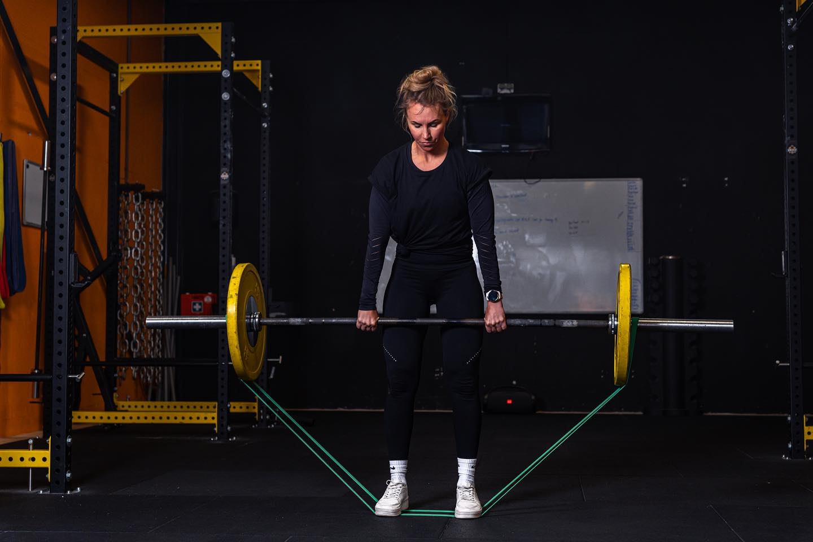

Les 3: Deadlifts
Planning
- Houding rug
- Set-up
- Oefenen deadlifts
- Accessory work
- Hex bar deadlifts
- Scores invullen
- begin weightlifting

Techniek:
Uitleg van The Australian Strength Coach
Oefenen
- Rug
- oefenen met de schouders naar achter en beneden
- Good mornings
- Core spanning
- GHD back extensions
- Invloed van diepte
- Rack pulls
- Snatch grip deadlifts
- deficit deadlifts
- Invloed van houding:
- Hex bar deadlift
- Variaties
- Stiff legged deadlifts
- Sumo deadlifts
Veel reps

Normaal gesproken kan je met een 1rm calculator ongeveer inschatten wat je 1rm is. Bij deadliften klopt dit vaak niet.
Dat komt door het stuiteren van de barbell als je meerdere reps achter elkaar maakt. Door het gestuiter wordt het onderste stuk van de deadlift makkelijker, terwijl dit normaal gesproken juist het zwaarste punt is. En klein beetje hulp van het stuiteren heeft hier een grote invloed.
Je kan dus wel meer deadlifts achter elkaar maken, maar je wordt onderin, op het belangrijkste punt, niet sterker
Om dit in training tegen te gaan is het goed om tussen elke rep een korte pauze te houden, waarop je opnieuw reset voor de volgende deadlift. Zo heb je de tijd om op je techniek te letten, en wordt je ook onderin de deadlift sterker.
Verhoudingen
Meer weten?
Uitleg video’s
Voor als ls je er alles van wilt weten: